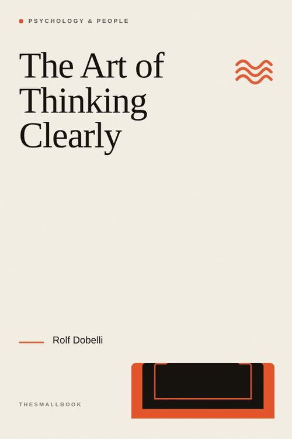

Library › Ask the Library › How do I stop fooling myself?
How do I stop fooling myself?
The short answer
Your brain cuts corners, survivorship, sunk cost, confirmation, social proof. The fix is mechanical: check base rates, kill sunk costs, hunt disconfirming evidence, and never follow the herd.
The books behind the answer

The Art of Thinking Clearly
Rolf Dobelli · 2011 · 8 min · 6 lessons
Your brain cuts corners - 99 ways. Learn the shortcuts, and you'll stop being fooled by your own mind.
- Survivorship Bias: The Graveyard Doesn't Give Interviews: You only see the winners, the graveyard of equal attempts is invisible. Check the base rate.
- Sunk Cost: The Money Is Gone, Stop Throwing More: Past investment is gone. Only the future matters, walk away from failing things you'd never start today.
- Confirmation Bias: The Mind Finds What It Looks For: Your brain cherry-picks evidence for what you already believe. Hunt what would prove you wrong.

Thinking, Fast and Slow
Daniel Kahneman · 2011 · 8 min · 6 lessons
Your fast, intuitive System 1 runs your life; your slow, rational System 2 mostly just approves its drafts. Know when to override.
- Two Systems: The Hero and the Lazy Controller: Your gut is fast but biased. For big calls, slow down and interrogate the first answer.
A failure that proves it
Why did Bernie Madoff fail?
2008 · FRAUD · Loss: $65B - history's largest Ponzi
Madoff fooled the smartest investors for decades, because nobody checked the math. Your own mind is the first Madoff.
'Enough' is a real number, and not knowing yours is lethal. Also: returns that never have a down year aren't skill - they're fiction. If it's too smooth to be true, it is.
Questions people ask next
Can I read this in Hindi?
Yes. This answer is written in simple English. Open any linked book and choose Hindi or Hinglish to read the full lessons in your language, with audio where available.